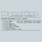

PRISM
⚡
Break
Todos los Proyectos
Plataformas
Protocolos
Acerca de
Dona Bitcoin

OpenWrt
Firmware
A GNU/Linux distribution for embedded devices.
Más información
Sitio Web Oficial
Artículo de Wikipedia
Información de Desarrollo
Licencia del Proyecto
Código Fuente
Platform Support
Routers
Firmware
Esta pagina es un espejo del proyecto solo con fines informativos. Muchos links pueden estar rotos y/o desactualizados.